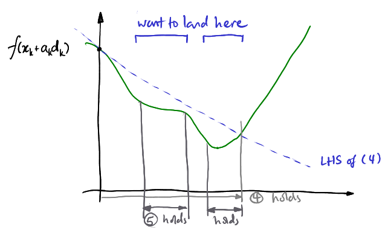
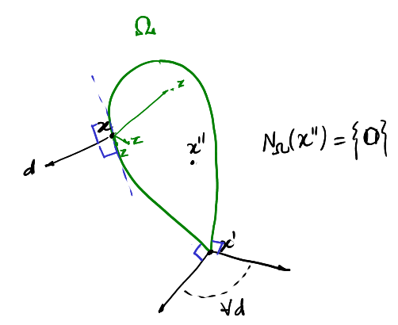
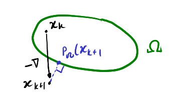
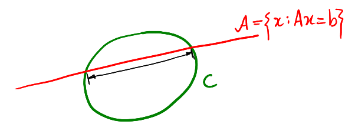

### Linear Equations
Series of linear equations are of the form
\begin{align}
a_{11} x_1 + \cdots + a_{1n}x_n &= b_1 \\\\
&\vdots \\\\
a_{m1} x_1 + \cdots + a_{mn} x_n &= b_m
\end{align}
Or in matrix form:
$$
\underset{m \times n}{A} \underset{n \times 1}{\x} = \underset{m \times 1}{\vec{b}}
$$
Let the notation $A_{.k}$ represent column $k$, i.e. `A[:, k]`. Therefore
$$ A\x = x_1 A\_{.1} + \cdots + x_n A\_{.n} $$
Hence $A\x \in \range(A)$, (the dimension of columns), $\forall x \in \R^n$.
Therefore, the solution set $S_{A, \vec{b}} \neq \varnothing$ **if and only if**
- $b \in \range(A)$
- $\rank(\begin{bmatrix}
A & \vec{b}
\end{bmatrix} = \rank(A))$ : the rank criterion (matrix concatenation)
> *rank* is the dimension of the vector space generated by a matrix's columns (or rows, whichever is fewer), i.e. the number of **linearly independent** columns/rows.
>
> *full rank* is if the rank is the same as the number of columns (or rows, whichever smaller).
Generally, if a solution $\x^* \in S_{A, b}$, then $\forall \x \in \R^n$:
\begin{align}
\x \in S\_{A, b} &\iff A(\x - \x^*) = 0 \\\\
&\iff A\x = A\xx \\\\
&\iff \x - \xx \in \null(A)
\end{align}
> Note that the null space of A is the set $\\{ \forall \y : A\y = 0 \\}$.
>
> Hence $S_{A, b}$ is the "affine set"
> $$ S_{A, \vec{b}} = \\{ \x^* + \z : \z \in \null(A) \\} $$
> for all solutions $\xx$. You can write this as $\xx + \null(A)$.
So $A\x + \vec{b}$ has a unique solution **if and only if** $\null(A) = \\{\0\\}$ -- the trivial null space (no non zero vectors make zero).
***Classes of linear equations.*** Suppose $A$ is **full rank** (since it is not interesting to consider otherwise)
Then $A\x + \vec{b}$ is:
- **over-determined** if $m \geq n$.
- $\dim(\null(A)) = 0$
- and if $b \not \in \range(A)$ there are no solutions. In this case we can seek the *best approximate solution*
- **under-determined** if $m \lt n$
- $\dim(\null(A)) = n - m \gt 0$ there are *infinite* solutions
- We could try to seek a solution with the *minimum norm*
- **square** if $m = n$
- and so the inverse $A^{-1}$ is unique, and there is a unique solution $\x^* = A^{-1}\vec{b}$.
***Fact.*** Let $A \in \R^{m \times n}.$
1. $\rank(A) = n \iff A\t A$ is invertible
2. $\rank(A) = m \iff A A\t$ is invertible.
### Linear Regression
**Input.** List of data and observations: $(t_1, b_1) \cdots (t_m, b_m)$
**Output.** An $\alpha, \beta \in \R$ s.t. a linear function $f(t) = \alpha + \beta t$ best predicts the data labels at hand, i.e. it minimises the error / loss function
$$
L(\alpha, \beta) = \sum_{i=1}^m \varepsilon_i^2
$$
Where $\varepsilon_i = f(t\_i) - b\_i$.
***Necessary conditions for a minimiser.***
**(1)** $\nabla L(\alpha, \beta) = \0$, where
\begin{align}
\nabla L(\alpha, \beta) &= \begin{bmatrix}
\frac{\partial L }{\partial \alpha } \\\\ \frac{\partial L }{\partial \beta }
\end{bmatrix} = \begin{bmatrix}
\frac{\partial }{\partial \alpha } \sum (\alpha + \beta t_i - b_i)^2 \\\\
\frac{\partial }{\partial \beta } \\;-"-
\end{bmatrix} \\\\
&= \begin{bmatrix}
2 \sum (\alpha + \beta t\_i - b\_i) \\\\
2 \sum (\alpha + \beta t\_i - b\_i) \cdot t_i
\end{bmatrix}
\end{align}
**(3)** Let
$$
\begin{matrix}
A = \begin{bmatrix}
1 & t_1 \\\\
\vdots & \\\\
1 & t_m
\end{bmatrix} &
\vec{b} = \begin{bmatrix}
b_1 \\\\ \vdots \\\\ b_m
\end{bmatrix} &
\x = \begin{bmatrix}
\alpha \\ \beta
\end{bmatrix}
\end{matrix}
$$
Then
$$
A\x = \vec{b} \equiv A\t A \x = A\t \vec{b}
$$
Is the normal equation for $A\x = \vec{b}$.
Thus (3) has a unique solution $\x^* = (A\t A)^{-1} A\t \vec{b}$.
### Linear Least Squares
***Thm.*** For $A \in \R^{m \times n}, \b \in \R^n$,
Let $\varepsilon = \varepsilon(\x) = A\x - \b$,
The **General least squares problem** is: find an $\x$ that **minimises**
$$
\sum_{i=1}^m \varepsilon_i ^2 = \varepsilon \t \varepsilon = (A\x - \b)\t (A\x - \b)
$$
$\x$ is called a **least squares solution**, and
- The set of all LS solutions == the set of solutions to the system of normal equations $A\t A \x = A\t \b$.
- There exists a unique LS soln **iff** $\rank(A) = n$, then $\x = (A\t A)^{-1}A\t \b$.
- If $A\x - \b$ is *consistent* then the solution set is the same as the LS set.
> Consistent: there is at least one set of values of unknowns that satisfies each equation in the system.
***Proof.*** (x minimises $\varepsilon\t\varepsilon \implies$ x satisfies normal eqns.)
We know $\x\t A\t \b = \b\t A \x$ due to scalar symmetry / dot product symmetry.
So $\varepsilon \t \varepsilon = (A\x - \b)\t (A\x - \b)$, which is
$$
\x\t A\t A \x - 2 \x\t A\t \b + \b\t\b
$$
Let this be $f(\x)$.
Solve by finding $\nabla f$ for each $x_i$:
$$
\frac{\partial f }{\partial x_i } = \frac{\partial \x\t }{\partial x_i } A\t A \x + x\t A\t A \frac{\partial \x }{\partial x_i } - 2\frac{\partial \x\t }{\partial x_i } A\t \b.
$$
Note that $\frac{\partial \x }{\partial x_i }$ is the unit vector $e_i$ which has a 1 in the ith place and 0 everywhere else, so
\begin{align}
\frac{\partial f }{\partial x_i } &= e_i\t A\t A \x + \x \t A\t A e\_i - 2e\_i\t A\t \b \\\\
&= 2e_i \t A\t A \x - 2e\_i \t A\t \b
\end{align}
Note that $e_i\t A\t$ is just the vector row $i$ of matrix A $A\t_{i*}$, and so this just becomes
\begin{align}
\implies 2 A\t_{i*} A\x - 2A\t_{i*} A \b &= \0 \pod{\rm{for minimum}} \\\\
\implies A\t_{i*} A\x &= A\t_{i*} A \b \\\\
\implies A\t A \x &= A\t \b
\end{align}
We can show any minimum of this system satisfies LS, but we want to demonstrate that *all* solutions are LS solutions.
If $\z$ is a soln to the normal eqns, then let
$$ f(\z) = \b\t\b - \z\t A\t \b
$$
For any other $\y \in \R^{n \times 1}$ let $\y = \z + \vec{u} $ i.e. $\vec u = \y - \z$, then we would get that
$$
f(\y) = f(\z) + (A\vec u)\t(A \vec u) = f(\z) + \vec v\t\vec v$
$$
for some vector $\vec v$, and since the dot product $\vec v \t \vec v$ must be positive, we know that $$f(\z) \leq f(\y) \forall \y \in \R^{n \times 1}$$
Hence it is a minimum. $\Box$
> Differentiating a matrix is just like differentiating scalars, and so:
> $$ \begin{bmatrix}
\frac{\partial U }{\partial x }
\end{bmatrix}\_{ij} = \frac{\partial u\_{ij} }{\partial x } $$
> Similarly
> $$ \frac{\partial U + V }{\partial x } = \frac{\partial U }{\partial x } + \frac{\partial V }{\partial x } $$
> $$ \frac{\partial UV }{\partial x } = \frac{\partial U }{\partial x }V + U \frac{\partial V }{\partial x } $$
> i.e. a useful one to know is that the gradient of $\x\t M \x$ is given as just $2M\x$.
Smooth Optimisation
### Gradient and Descent
***Definition.*** (Partial Derivatives, gradient, smoothness).
Let $f : \R^n \lra \R$, and let $x \in \R^n = (x_1 .. x_n)$
The **partial derivative** $\nabla_{x_i} f(\w) = \frac{\partial f(\w) }{\partial x_i }$
- is defined to be a derivative of a function $\phi$, $\phi_i' (w)$, where
$$ \phi_i(z) = f(w_1 .. w_{i-1}, z, w_{i+1}.. w_n)$$
- i.e. the partial derivative for an element of a vector, fix all other elements and derive that one only.
The **gradient** $\nabla_\x f(\w)$ (often without the subscript)
$$
\nabla f(\w) = \begin{bmatrix}
\nabla_{x_1} f(\w) \\\\
\vdots \\\\
\nabla_{x_n} f(\w)
\end{bmatrix}
$$
- So $\nabla f : \R^n \lra \R^n$, if defined for all elements in a domain (**well defined**)
$f$ is **smooth** if its gradient is *continuous* / it is continuously differentiable.
***Thm.*** (First order taylor theorem) **IMPORTANT**
Let $f: \R^n \lra \R$ be smooth, then we can use first order taylor approximations:
For a small vector distance $\p$:
- The **integral form**:
$$
f(\x + \p) = f(\x) + \int_0^1 \nabla f (\x + \gamma \p)\t \p \\;\dd \gamma
$$
- The **mean value form**:
$$
f(\x + \p) = f(\x) + \nabla f(\x + \gamma \p)\t\p
$$
For some $\gamma \in (0,1)$
***Corollary.*** (Local linear approximation)
If $f : \R^n \lra \R$ is smooth at $\x$, then for some small $\p$
$$ f(\x + \p) = f(\x) + \nabla f(\x)\t\p + o(\nm{p})$$
Where little $o(\nm p)$ notation means that the "residual" ratio $\frac{ r(\p) }{ \p }$ for some residual function (the "error" I guess) is vanishingly small compared ot the norm of $\p$
***Proof.***
- By mean value form
$$f(\x + \p) = f(\x) + \nabla f(\x + \gamma \p) \t \p$$
- Adding and subtracting the same thing
$$= f(\x) + \nabla f (\x)\t \p + (\nabla f(\x + \gamma \p) - \nabla f(\x))\t \p$$
- which is
$$ = f(\x) + \nabla f (\x)\t \p + O(\nm{\nabla f(\x + \gamma \p) - \nabla f(\x)} \nm{\p})$$
- And we claim this big-O term is just little-o norm of p, by claiming that
$$ \lim_{\nm p \lra 0} O(\cdots) \longrightarrow\longrightarrow 0$$
As $\nm p \lra 0$, the gradient term tends to $\nabla f(\x)$, and since the gradient is continuous we can do this. Thus the ratio
$$
\frac{ \nm{\nabla f(\x + \gamma \p - \nabla f(\x))} \nm{\p} }{ \nm \p } \lra \nm{\nabla f(\x) - \nabla f(\x)} \lra 0
$$
Therefore
$$
f(\x + \p) = f(\x) + \nabla f(\x)\t\p + o(\nm{p}) \Box
$$
***Def.*** A vector $\d \in \R^n$ is a **descent direction** if for a function at a point $f(\x)$,
$$
f(\x + t\d) \lt f(\x)
$$
For all sufficiently small values of $t$.
***Fact.*** If $f$ is smooth in a neighbourhood of $\x$ (close to x), then every direction s.t. $\nabla f(\x)\t \d \lt 0$ is a valid descent direction.
***Proof.*** Since the gradient is continuous, there is some $t^* \gt 0$ where
$$
\nabla f(\x + t\d) \t \d \lt 0 \pod{\forall t \in [0, t^*]}
$$
By the mean value form of taylor theorem,
$$
f(\x + t\d) = f(\x) + t \nabla f (\x + \gamma t \d) \cdot \d
$$
Since $\gamma t \lt t$ as gamma is between 0 and 1, $f(\x + t\d) \lt f(\x)$. Thus it is a descent vector. $\Box$
***Corrolary.*** If $\xx$ is a **local minimiser** for a smooth $f$, then
$$
\nabla f(\x^*) = \0
$$
### Gradient Descent
> not to be confused with the previous section "Gradient and Descent"
***Fact.*** (On steepest descent directions for a point where the gradient is nonzero)
Among directions $\d$ with unit length, the one that minimises $\nabla f(\x) \cdot \d$ is
$$
-\frac{ \nabla f(\x) }{ \nm{\nabla f(\x)} }
$$
***Algorithm.*** Gradient Descent $GD(\alpha_k, T)$:
1. Pick $\x_0 \in \R^n = \dom(f)$
2. **for** $k = 0..T-1$ steps:
1. choose step size $\alpha_k \gt 0 $
2. set $\x\_{k+1} := \x\_k - \alpha\_k \nabla f(\x\_k)$
3. **return** $\x_T$
Also written as $GD(\alpha_k)$ and the algorithm runs until convergence.
In terms of the step length, too small and it is too slow, too large and it overshoots.
***Def.*** $f$ is **L-Lipschitz continuous** if
$$
|f(\x) - f(\y)| \leq L \nm{\x - \y}
$$
For some constant $L$.
***Def.*** $f$ is **L-smooth** if its gradient is L-lipschitz.
***Lemma.*** (Quadratic UB for L-smooth functions)
If $f$ is L-smooth, then
$$
f(\x + \p) \leq f(\x) + \nabla f(\x)\t\p + \frac{ L }{ 2 } \nm{\p}^2
$$
($\nm\p^2 \equiv \p\t\p$)
***Proof.***
Take by integral form of Taylor's theorem and taking away gradient:
$$
f(\x + \p) - f(\x) - \nabla f(\x)\t\p = \int_0^1 (\nabla f(\x + \gamma \p) - \nabla f(\x))\t\p \dd\gamma
$$
By the *cauchy schwarz inequality*:
$$
\cdots \leq \int_0^1 \nm{\nabla f (\x + \gamma\p) - \nabla f(\x)} \nm{\p} \dd\gamma
$$
Then by the L-smoothness of $f$:
\begin{align}
&= \int_0^1 L \nm{\x + \gamma \p - \x}\nm\p \dd \gamma \\\\
&= L \lVert \p^{2} \rVert \int_0^1 \gamma \dd \gamma = \frac{L}{2} \lVert \p^{2} \rVert &\Box
\end{align}
***For L-smooth functions, pick $GD(\frac 1 L)$.***
The motivation for this goes as:
- via the lemma, the improvement is
$$ F(\x + \alpha\d) - f(\x) \leq \alpha \nabla f(\x)\t\d + \alpha^2 \frac L 2 \nm{\d}^2$$
- And for the descent direction $\d$ to be $\nabla f(\x)$, then the choice $\alpha = \frac 1 L$ minimises the RHS of the function
***Fact.*** If $f$ is L-smooth, then $\x_0, \x_1, \dots$ iterates of GD with fixed step 1/L, the improvement over 1 step is
$$ f(\x_{k+1}) - f(\x_k) \leq -\frac{1}{2L} \nm{\nabla f(\x ^k)}^2 $$
The proof of this fact can be found by subbing $\alpha = \frac 1 L$ into the improvement equation.
The one step improvement of GD is *at least as much* as this bound.
***Theorem.*** (Convergence rate of $GD(\frac 1 L)$ for L-smooth functions)
- Let $f$ be L-smooth
- Let the global minimiser $f^* \leq f(\x) \\;\forall \x \in \dom(f)$.
- Let $G = f(\x_0) - f^*$ be the initial optimality gap.
Then, after $t$ steps of $GD(\frac 1 L)$, we can find some $\x_k \in \dom(f)$ such that
$$
\nm{\nabla f(\x_k)} \leq \sqrt{\frac{2LG}{t}} $$
Hence we can find a $\x_k : \nm{\nabla f(\x_k)} \leq \varepsilon$ for a small $\varepsilon$, which is an **approximate stationary point** after $\frac{2LG}{\varepsilon^2}$ steps.
***Proof.*** We can sum up all one step improvements:
\begin{align}
\sum_{k=1}^{t-1} f(\x_{k+1}) - f(\x_k) &= f(\x_t) - f(\x_0) \\\\
f(\x_t) - f(\x_0) &\leq - \frac{1}{2L} \sum_{k=0}^{t-1} \nm{\nabla f (\x_k)}^2
\end{align}
Hence
$$
\sum_{k=0}^{t-1} \nm{\nabla f(\x_k)}^2 \leq 2L(f(\x_0) - f(\x_t)) \leq 2LG
$$
So as $t$ increases, we are always bound by a constant. Therefore the gradient converges to zero:
$$
\lim_{k \lra \infty} \nm{\nabla f(\x_k)} = 0
$$
So after $t$ steps,
$$
\min_{k = 0..t-1} \nm{\nabla f(\x_k)}^2 \leq \frac{1}{t} \sum_{k= 1}^{t-1} \nm{\nabla f(\x_k)}^2 \leq \frac{2LG}{t}
$$
And hence the square root form. Note The minimum of a set is never more than the average.
The second point follows on from the first point.
So far, we only ensure that *some* point the gradient is smallest, what is guaranteed is that the function decreases monotonically.
We do not guarantee GD gets the exact minimum, only the approximate minimum. Moreover, technically GD only finds stationary points, convexity of functions guarantees it is a minimum.
### Convex Sets and functions
***Def.*** A set $\Omega \subseteq \R^n$ is a **convex set** IF for any $x, y, \in \Omega$, and any $\alpha \in [0,1]$, we have that the convex combination (i.e. linear interpolation) always satisfies:
$$
(1-\alpha)x + \alpha y \in \Omega
$$
***Def.*** A function $f: \R^n \lra \R$ is **convex** IF $\forall \x,\y \in \dom(f),\; \alpha \in [0,1]$, that
$$
f((1-\alpha)\x + \alpha\y) \leq (1-\alpha)f(\x) + \alpha f(\y)
$$
***Thm.*** Suppose $f : \Omega \lra \R$ is convex, and $\Omega$ is convex and closed. Then
1. Every **local minimiser** of $f$ is also the **global minimiser**.
2. The set of all global minimisers is convex.
***Thm.*** (First order characterisation of convexity)
If $f:\R^n \lra \R$ is smooth and convex, then $\forall \x, \y \in \R^n$
$$
f(\y) \geq f(\x) + \nabla f(\x)\t (\y - \x)
$$
This is the *first order linear approximation of $f(\x)$* via the taylor's theorem.
***Thm.*** For convex functions, a 0 gradient is both **necessary** and **sufficient** for a local minimum.
### Fixed Step GD for Convex Functions
***Thm.**(Convergence rate of $GD(\frac 1 L)$ for L-smooth convex functions)*
Let $f$ be L-smooth and convex. Let $\xx$ be a minimiser, and let the minimum value $f^\* = f(\xx)$.
Let the *distance* $D = \nm{\x_0 - \x^*}$ be the "initial gap". $\x_0 .. \x_t$ are iterates of gradient descent.
**Then** at step $t$ of gradient descent,
$$
f(\x_t) - f^* \leq \frac{L \cdot D^2}{2t}
$$
**Hence** $f(\x_t) - f^* \leq \varepsilon$ for a small $\varepsilon$ after $t \geq \frac{LD^2}{2\varepsilon}$ steps.
Therefore iterations is proportional to $\frac 1 \varepsilon$.
***Proof.*** Recall for gradient descent:
$$
f(\x_{k+1}) \leq f(\x_k) - \frac{ 1 }{ 2L } \nm{\nabla f (\x_k)}^2
$$
Recall for convexity for any points $\z,\x$:
$$
f(\z) \geq f(\x) + \nabla f(\x)\t(\z-\x) \geq f(\x)
$$
Therefore since $f$ is convex
$$
f(\x^*) \geq f(\x_k) + \nabla f(\x_k) \t (\x^* - \x_k)
$$
Reverse and sub in for $f(\x_k)$ to get
\begin{align}
f(\x_{k+1}) &\leq f(\xx) + \nabla f(\x\_k)\t (\x_k - \xx) - \frac{ 1 }{ 2L }\nm{\nabla f(\x\_k)}^2 \\\\
&\leq f(\xx) + \frac{L}{2} \left( 2(\x_k - \xx) \cdot \frac 1 L \nabla f(\x\_k) - \frac{ 1 }{ L^2 }\nm{\nabla f(\x\_k)}^2 \right) \\\\
&\leq f(\xx) + \frac{L}{2} \left( 2(\x_k - \xx) \cdot \frac 1 L \nabla f(\x\_k) - \lVert \frac{ 1 }{ L } \nabla f(\x\_k) \rVert ^2 \right) \\\\
&\leq f(\xx) + \frac{L}{2} \left( \nm{\x_k - \xx}^2 - \lVert \x_k - \xx - \frac 1 L \nabla f(\x_k) \rVert^2 \right)
\end{align}
Where the last step comes from an identity over vectors $\vec{a}, \vec{b}$ where
$$
\nm{\vec{a}}^2 - \nm{\vec{a} - \vec{b}}^2 = 2\vec{a}\t\b - \nm{\b}^2
$$
Now shift $f(\x^*)$ over to the left hand side, and sum over all $k = 0..t-1$:
$$
\begin{align*}
\sum\limits_{k=0}^{t-1} (f(\x_{k+1}) - f^\*) &\leq \frac{L}{2} \sum\limits_{k=0}^{t-1} ( \nm{\x_k - \xx}^2 - \nm{\x_{k+1} + \xx}^2)\\
&\leq \frac{L}{2} (\nm{\x_0 - \xx}^2 - \nm{\x_t - \xx}^2)\\
&\leq \frac{LD^2}{2}
\end{align*}
$$
Hence because $f(\x_0) \leq f(\x\_1( \leq \cdots \leq f(\x\_t)))$
$$
t(f(\x_t) - f^\*) \leq \sum\limits_{k=0}^{t-1} (f(\x_{k+1}) - f^\*) \leq \frac{LD^2}{2}
$$
Therefore
$$
f(\x_t) - f^* \leq \frac{LD^2}{2t} \\;\\;\\;\Box
$$
However the bound $t \geq \frac{ LD^2 }{ 2\varepsilon }$ is still not good. We would like ideally something that would produce a new digit of precision every step, i.e. running in time $\log \frac{1}{\varepsilon}$.
More Descent Methods
### Delta Decrease
***Def.*** The **Hessian** (second derivative) of a function $f: \R \lra \R$ where $f(\x) = f(x_1, x_2, \dots, x_n)$ is given as
$$
\nabla^2 f(\w) = \begin{bmatrix}
& (\nabla_{x_j} \nabla_{x_i} f)(\w) &
\end{bmatrix}_{i, j \in 1..n}
$$
e.g.
$$
\nabla^2 f(x, y) = \begin{bmatrix}
\frac{\partial f }{\partial x } \frac{\partial f }{\partial x } &
\frac{\partial f }{\partial y } \frac{\partial f }{\partial x } \\\\
\frac{\partial f }{\partial x } \frac{\partial f }{\partial y } &
\frac{\partial f }{\partial y } \frac{\partial f }{\partial y }
\end{bmatrix}
$$
$f$ is **twice continuously differentiable** if the hessian is well defined (all sub-derivatives exist) and continuous.
For gradient descent $GD_{\alpha, \d}$, $\alpha \in \R$ is the step length and $\d \in \R^n$ is the direction.
We should choose them such that it guarantees **(1) delta decrease:**
$$
f(\x_{k+1}) \leq f(\x_{k}) - \delta \nm{\nabla f(\x_k)}^2 \pod{\delta \in \R}
$$
***Thm.*** Suppose $f$ is smooth and satisfies (1). Then
- **if** $f$ is bounded from below by an $\bar f \in \R$,
- **then** all accumulation points of sequence $\x_0, \x_1, \x_2, \dots$ are stationary points
- **and** $\min\limits_{o \leq k \leq T-1} \nm{\nabla f(\x_k)} \leq \sqrt{\frac{ G }{ \delta t }} \rm{ where } {G = f(\x_0) - \bar f}$
- **if** $f$ is convex, $\x^*$ is a minimiser and $f^* = f(\x^*)$, and the level set of $\x_0$ is bounded; let $R_0$ be the maximum of its level set (which is a finite real number),
- **then** $f(\x_t) - f^* \leq \frac{ R_0 }{ \delta t }$
> *accumulation points*: points which subsequences of a sequence converge to.
>
> *level set*: $\\{ \nm{\x - \x\_0} : f(\x) \leq f(\x\_0) \\}$
Proof for these is left as an exercise.
### Choosing Directions
We can define two more conditions:
**(2) $\bar \varepsilon$ angle** -- the angle between $\d_k$ and $-\nabla f(\x)$ is acute, and
$$
0 \lt \bar\varepsilon \leq \frac{ -(\d_k)\t \nabla f(\x_k) }{ \nm{\d_k} \nm{\nabla f(\x_k )} }
$$
**(3) $\gamma_1, \gamma_2$ lengths**
$$
0 \lt \gamma_1 \leq \frac{ \nm{\d_k } }{ \nm{\nabla f(\x_k)} } \leq \gamma_2
$$
***Fact.***
- Suppose $f$ is L-smooth
- If $GD_{\alpha, \d}$ satisfies (2) and (3),
- Then it can be made to satisfy (1) for $\alpha(\bar \varepsilon, \gamma_1, \gamma_2, L) =$ some mystery function
- And for $\delta = \frac{ 1 }{ 2L } \phi(\bar\varepsilon, \gamma_1, \gamma_2)$
Proof is left as an exercise. Hint: assume the same things for step length 1/L as in old proof -> minimised RHS of a quadratic UB -> smallest decrease. We can now vary away from the smallest decrease. (whatever that means)
***Scaled gradient.***
$$ \d_k = S_k \nabla f(\x_k) $$
Where $S_k$ is a *matrix* that is symmetric, positive definite (to prevent it from flipping the direction), and with eigenvalues $\in [\gamma_1, \gamma_2]$ from (3).
Thus (3) holds, so
$$
\frac{ \nm{\d_k} }{ \nm{\nabla f(\x_k)} } = \frac{ \nm{S_k \nabla_f (\x_k)} }{ \nm{\nabla f(\x_k)} } \in [\gamma_1, \gamma_2]
$$
And (2) holds for $\bar\varepsilon = \frac{ \gamma_1 }{ \gamma_2 }$
***Newton's Method.*** Let
$$\d_k = -(\nabla^2 f(\x_k))^{-1} \nabla f(\x_k)$$
(i.e. the matrix is the inverse hessian).
If this is close to the optimal point, convergence is very fast -- for every step, we get *double* the digits of precision.
This satisfies (3) if the eigenvalues of the hessian are $\lambda \in [ \frac{ 1 }{ \gamma_2 }, \frac{ 1 }{ \gamma_1 } ]$
***Gauss Southwell version of Coordinate Descent.*** Let
$$
\d_k = -[\nabla f(\x\_k)]\_{i\_k} e\_{i\_k}
$$
Where $e_k$ is a vector of zeros, except the $k$th element is one. Where $i_k$ is the coordinate index $1..k$ which maximises $\rm{abs}| [\nabla f(\x_k)]_{i_k}] |$
I.e. we move along the steepest coordinate aligned line.
This reduces the calculation of the next gradient since the direction is simple. It can be calculated efficiently if new and old differentiate by only one coordinate -- so for some functions.
***Randomised coordinate descent.*** Let
$$
\d_k = -[\nabla f(\x_k)]_{i_k} e_{i_k}
$$
for a *randomly uniform* $i_k : i \in 1..n$.
For (2) this has:
$$
\bb{E}\_{i\_k} (-(\d\_k)\t \nabla f(\x\_k)) \geq \frac{ 1 }{ n } \sum_{i =1}^n [\nabla f(\x\_k)]\_i^2 = \frac{ 1 }{ n }\nm{\nabla f(\x\_k)}
$$
And (3) has
$$
\bb{E}\_{i\_k} (\nm{\d\_k}^2) = \frac{ 1 }{ n }\nm{\nabla f(\x\_k)}^2
$$
### Choosing Step Length
***Fixed step length.*** Just use $\frac{ 1 }{ L }$. Or, realistically, since that's not trivial to find, just guess it.
***Exact line search.*** The general idea:
$$
\alpha_k = \argmin_{\alpha \gt 0} f(\x_k + \alpha \d_k)
$$
Pick the length to get the most down per step -- approximately. Exact values can be computationally expensive, but ELS is sufficient in some cases, like multivariate polynomials.
- Minimise a mult.var. polynomial by finding roots of gradient along search direction, test each root to find the minimum one.
ELS is also easy on coordinate directions. $f(\x_k + \alpha e_{i_k})$ can be cheap for some functions.
The improvement is at least as good as fixed step.
***Approximate Line Search.*** Let $0 \lt c_1 \lt c_2 \lt 1$. We have the **weak wolfe conditions**:
- **(4)** Sufficient $f$-decrease:
$$ f(\x_k + \alpha_k \d_k) \leq f(\x_k) + c_1 \alpha_k (\nabla f(\x_k)\t \d_k) $$
- **(5)** Sufficient increase of directional derivative $\nabla_{\d_k} f$ (how fast a function increases along that direction):
$$ \nabla f(\x_k + \alpha_k \d_k)\t \d_k \geq c_2 \nabla f(\x_k)\t \d_k $$

***Thm.*** If $f$ is L-smooth, then $\exists \alpha_k$ such that both (4) and (5) hold.
And since (4) and (5) implies (1),
we would have a delta-decrease with
$$
\delta = \varepsilon^{-2} \frac{ c_1 (1-c_2) }{ L }
$$
> However, the actual algorithm doesn't need to know L.
***Algorithm.*** Extrapolation bisection line search (EBLS)
The algorithm has a loop, but there is a ***theorem*** that EBLS is guaranteed to terminate. Proof is in Wright-Recht
***Backtracking Line Search.***
Useful for when evaluating $f$ is cheap, but $\nabla f$ is not.
Easy to implement without knowledge of L, and reasonably fast.
The simplest variant goes as
1. Pick an initial value for $\bar\alpha$ (such that we will only step a maximum of $\bar\alpha$ or smaller)
2. Choose a step $0 \lt \beta \lt 1$
3. Let $\alpha_k$ be the first number in the sequence $\bar\alpha, \bar\alpha\beta, \bar\alpha\beta^2, \dots$ such that (4) there is a sufficient decrease. (5) is automatically fulfilled.
***Thm.*** If $f$ is L-smooth, then $GD_{\alpha_k, \d}$ satisfies (1) **if** (2), (4), (5) hold, and
$$
\delta = \frac{ 2 }{ L } \beta c_1 (1-c_2) \bar\varepsilon^2
$$
### 2nd Order Methods
By using the hessian, we can also formulate the **second order taylor theorem**:
***Thm.*** (2nd order taylors) **IMPORTANT**
- **Mean value form:**
$$ f(\x + \p) = f(\x) + \nabla f(\x)\t\p + \frac{ 1 }{ 2 } \p\t \nabla^2 f(\x + \gamma \p) \p \pod{\gamma \in (0,1)} $$
- **Quadratic approximation:**
$$ f(\x + \p) = f(\x) + \nabla f(\x)\t \p + \frac{ 1 }{ 2 } \p\t \nabla^2 f(\x) \p + o(\nm{\p}^2) $$
- **Integral form:**
$$ \nabla f(\x + \p) = \nabla f(\x) + \int_0^1 \nabla^2 f(\x + \gamma \p) \p \dd \gamma $$
***Thm.*** (2nd order necessary condition for any local minimum)
Suppose $f$ is twice continuously differentiable.
If $\xx$ is a local minimiser of $f$, then $\nabla f(\xx)$ = 0, and $\nabla^2 f(\xx)$ is **positive definite**.
***Proof.*** Suppose $\nabla^2 f(\x^*)$ has a negative eigenvalue (thus is not PD).
Thus for some eigenvector $\vec{v} \in \R^n$: $$\vec v\t \nabla^2 f(\x^*) \vec v \leq - \lambda \pod{\rm{for } \lambda \gt 0}$$
We argue that such a $\vec v$ is a descent direction, by evaluating $f(\x^* + \alpha \vec v)$ for some small step alpha. By the MVF 2nd order taylor theorem:
\begin{align}
f(\x^* + \alpha \vec v) &= f(\xx) + \alpha \nabla f(\xx)\t\vec v + \alpha^2 \frac12 \vec{v}\t \nabla^2 f(\x^* + \gamma \alpha \vec{v}) \vec{v} \\\\
&= f(\xx) + \frac12 \alpha^2 \vec{v}\t \nabla^2 f(\xx + \alpha \gamma \vec{v}) \vec{v} \\\\
f(\xx) &\gt f(\xx) - \frac12 \alpha^2 \frac\lambda 2
\end{align}
- First step: note that $\nabla f(\x^) = \vec{0}$ and so that cancels.
- Second step: $\vec{v}\t \nabla^2 f(\xx + \alpha \gamma \vec{v}) \vec{v}$ for a sufficiently small $\alpha$, by the continuity of the hessian is $\leq - \frac\lambda 2$.
- Third step: the negative term is positive for all sufficiently small $\alpha$
Therefore $\vec v$ is a descent direction, and $\x^*$ would thus not be a local minimiser of the function, which contradicts what we stated.
***Thm.*** (2nd order sufficient condition) Suppose $f$ is twice cont. diff'able.
If $\nabla f(\xx) = 0$ AND $\nabla^2 f(\xx)$ is positive definite, then $\xx$ is a local minimiser.
The proof of this also uses MVF Taylor's thm.
***Thm.*** (2nd order characterisation of L smoothness) Suppose $f$ is twice-cont-diff'able.
- **(A)** IF $f$ is L-smooth, THEN $\nabla^2 f(\x) \preceq L \vec I$ -- the biggest eigenvalue of the hessian is no bigger than L.
- **(B)** IF $-L \vec{I} \preceq \nabla^2 f(\x) \preceq L \vec{I} $ THEN $f$ is L-smooth.
> Note: $A \preceq B$ for matrices A, B is defined $A \preceq B \iff B - A$ is positive semidefinite.
This is saying: if the transformation done by the hessian doesn't stretch too much in any one direction, the gradient does not change too rapidly.
***Def.*** $f : \R^n \lra \R^n$ is **$m$-strongly convex** (where $m \gt 0$) if $f(\x) - \frac m 2 \nm{\x}^2$
i.e. it is m-strongly convex if you can subtract a quadratic from it and still have it remain convex.
1. $\nm{x}_2^2$ is strong convex.
2. IF $f$ is L-smooth (but not necessarily convex), then $f(\x) + \mu \nm{\x}_2^2$ is also SC for a large enough $\mu$.
3. Given a symmetrical matrix $Q \in \R^{n \times n}$ then $\x Q \x$ is strongly convex **if** Q is positive definite.
***Thm.*** (characterisation of strong convexity)
1. $f$ is $m$-strongly convex **if and only if** $f((1 -\alpha) \x + \alpha \y) \leq (1-\alpha)f(\x) + \alpha f(\y) - \frac m 2 (1 - \alpha) \alpha \nm{\x - \y}^2$ for all real vectors $\x, \y$ and constant $\alpha$.
3. If $f$ is strongly convex, then $f$ is **strictly** convex.
2. If $f$ is strongly convex, and $\nabla f(\xx) = 0$, then $\xx$ is the **unique** global minimiser.
4. [1st-ord characterisation of strong convexity] IMPORTANT Suppose $f$ is smooth, then for all $\x, \p$:
$$ f(\x + \p) \geq f(\x) + \nabla f(\x)\t \p + \frac m 2 \nm{\p}^2 $$
5. [2nd-ord characterisation of strong convexity] IMPORTANT Suppose $f$ is twice continuously differentiable. $f$ is m-strongly convex **if and only if**
$$ \forall \x \in \R^n; \\; \nabla^2 f(\x) \preceq m \vec{I} $$
i.e. $\lambda_1 (\nabla^2 f(\x)) \geq m$ (the first/smallest eigenvalue)
***Theorem.*** (Linear Converge of $GD(\frac 1 L)$ for L-smooth and m-strong convex functions)
- Suppose $f$ is L-smooth, m-strongly convex. I.e. $\nabla^2 f$ exists for all x and $m \vec I \preceq \nabla^2 f(\x) \preceq L \vec I$
- Let $\xx$ be the **unique** minimiser of $f$, and $f^\* := f(\xx)$
- Let $\x_0, \x_1, \dots$ be iterates of $GD(\frac 1 L)$
- Let $G = f(\x_0) - f(\x^*)$ be the initial optimal gap.
Then:
$$ f(\x_t) - f^* \leq G \left( 1 - \frac m L \right)^t $$
> Note $ \frac m L \lt 1$. This is an exponential gap -- closer m is to L, the better the performance.
$$ \forall \varepsilon \gt 0.\\; f(\x_t) - f^* \leq \varepsilon$$
If $t \geq \frac L m \log\left(\frac G \varepsilon\right)$
This gives us **linear convergence**. Since $\log (f(\x_t) - f^*) \leq t \log C + D$ for constants C and D, and is linear in $t$.
***Lemma 1.*** If $f$ is m-strong-convex, then $\forall x \in \R^n$:
$$f(\x) - f^* \leq \frac{1}{2m} \nm{\nabla f(\x)}^2 $$
***Proof.*** Recall 1st order charac. of m-strong convexity.
- Fix $\x$, vary $\p$.
- Let $\xx = \x - \p$, i.e. $\p = \xx - \x$. Then
\begin{align}
f(\x^*) &\geq f(\x) + \nabla f(\x)\t \p + \frac m 2 \nm{p^2} \\\\
&\geq \min_{\z} \left\\{ f(\x) + \nabla f(\x)\t\z + \frac m 2 \nm{\z}^2 \right\\}
\end{align}
Let the inside of the $\min$ function be $g(\z)$. Note that it is a quadratic in $\z$. Then,
\begin{align}
\nabla g(\z) = \nabla f(\z) + m \z &:= 0 \\\\
\z &= - \frac 1 m \nabla f(\z)
\end{align}
Substituting this in we get
\begin{align}
f^* &\geq f(\x) + \nabla f(\x)\t\left(-\frac 1 m \nabla f(\x)\right) + \frac m 2 \lVert -\frac 1 m \nabla f(\x) \rVert^2 \\\\
&\geq f(\x) = \frac 1 m \nm{\nabla f(\x)}^2 + \frac m 2 \frac 1 {m^2} \nm{\nabla f(\x)}^2 \\\\
&\geq f(\x) - \frac{1}{2m} \nm{\nabla f(\x)}^2 \\\\
f(\x) - f^* &\leq \frac{1}{2m} \nm{\nabla f(\x)}^2
\end{align}
***Proof.*** By definition
$$
f(\x_{k+1}) - f(\x_k - \frac 1 L \nabla f (\x_k))
$$
Since $f$ is L-smooth,
$$ f(\x_{k+1}) \leq f(\x_k) - \frac{1}{2L} \nm{\nabla f (\x_k)}^2 $$
By lemma 1,
$$ f(\x_{k+1}) \leq f(\x_k) - \frac{1}{2L} 2m(f(\x_k) - f^\*) $$
Hence
\begin{align}
f(\x_{k+1}) - f^\* &\leq (f(\x_k) - f^\*) - \frac m L (f(\x_k) - f^\*)\\\\
&\leq (1 - \frac m L)(f(\x_k) - f^\*)
\end{align}
After $t$ steps, we get
\begin{align}
f(\x_t) - f^* &\leq \left(1-\frac m L\right)^2 (f(\x_t) - f^*) \\\\
&\leq \left(1-\frac m L\right)^2 G.
\end{align}
***Lemma 2.*** If $f$ is m-strongly convex, then
$$
\nm{\x - \x^*} \leq \frac 2 m \nm{\nabla f(\x)}
$$
***Proof.*** Use (4):
$$
f(\xx) \geq f(\x) + \nabla f(\x)\t (\x - \xx) + \frac m 2 \nm{\xx - \x}^2
$$
Via cauchy schwartz inequality:
$$
f(\xx) \geq f(\x) + \nm{\nabla f(\x)} \{(\x - \xx)} + \frac m 2 \nm{\xx - \x}^2
$$
Hence:
$$
\frac m 2 \nm{\x - \xx} \leq f(\xx) - f(\x) + \nm{\nabla f(\x)} \nm{(\x - \xx)}
$$
Note $f(\xx) - f(\x) \lt 0$, and so can be removed from the RHS. We can also flip around a minus sign in a norm without effect.
$$
\frac m 2 \nm{\x - \xx}^2 \leq \nm{\nabla f(\x)} \nm{(\xx - \x)}
$$
So
$$
\nm{(\xx - \x)} \leq \frac 2 m \nm{\nabla f(\x)} \\; \Box
$$
Newton's Methods
### Scaled GD
***Condition number.*** On an L-smooth m-strongly convex function $f : m \preceq \nabla^2 f(\x) \preceq L$, the runtime of GD can be measured in terms of the error achieved:
$$
O\left( \frac L m \log \frac G \varepsilon \right)
$$
Where the $\log \frac G \varepsilon$ is good, and $\frac L m$ is bad. The latter of these is called the **condition number**.
If $\frac L m$ is large, then we say that $\argmin_\x f(\x)$ is **ill-conditioned**.
The smallest possible condition number is $\frac L m = 1$, this is the best aim.
***Scaled GD.*** For the minimisation problem, we can change / rescale the variable:
$$
\x = C \y + \vec t
$$
Where $C \in \R^{n \times n}$ is invertible and $\vec t \in \R^n$. This is an *affine* change. This rephrases the problem into
$$
\argmin_\y h(\y) \pod{h(y) = f(C\y + \vec t)}
$$
And equivalently
$$
\nabla h = C\t \nabla f(C\y + \vec t) = C\t \nabla f(\x)
$$
Let us look at $GD(1)$ on $h$:
$$
\y_{k+1} = \y_k - C\t \nabla f(C\y_k + \vec t)
$$
Left-multiply by $C$ and add $\vec t$:
$$
\implies C\y_{k+1} + \vec t = (C \y_k + \vec t) - CC\t \nabla f(C\y_k + \vec t)
$$
Note that $C\y_{k+1} + \vec t = \x_{k+1}$, and $C \y_k + \vec t = \x_t$, and $CC\t$ is symmetric and positive definite. Thus this is nothing but the scaling matrix $S$. This reduces to
$$
\x_{k+1} = \x_k - S\nabla f(\x_k)
$$
"S-scaled $GD(1)$".
Since $\frac L m$ is a ratio of gap of $\nabla^2f$ eigenvalues, the *least* ill conditioned $\nabla^2$ will have the smallest gap -- $\vec{I}$.
***Def.*** (square root of symmetric positive definite (SPD) matrix)
For an SPD $S \in \R^{n \times n}$, let $S = U\t DU$, where
- U is orthogonal, i.e. $U\t U = UU\t = \vec{I}$
- D is diagonal with positive diagonal values $d_1 ..d_n$
Define $\sqrt{S} := U\t E U$ where $E = \sqrt{D} = \rm{diag}(\sqrt d_1 .. \sqrt d_n)$
***Fact.*** $\sqrt S \sqrt S = S$
Our intention is to "fix" ill conditioned functions through affine scaling. Since hessians can vary though, we should choose a new S each step.
$$
\x_{k+1} = \x_k + S_k \nabla f(\x_k)
$$
Where $\x = \sqrt{S} \y$ (and we ignore $+\vec t$ since it's ignored by the gradient and hessian), so $\y_{k+1} = \y_k - \nabla h (\y_k)$
The scaled gradient is given
$$
\nabla h (\y_k) = \sqrt S \nabla f(\sqrt S \y_k)
$$
The scaled hessian is given
$$
\nabla^2 h(\y_k) = \sqrt S \nabla^2 f(\sqrt S \y_k) \sqrt S = \sqrt S \nabla^2 f(\x_k) \sqrt S
$$
And we want to set $S$ such that the hessian becomes I.
If $\nabla^2 f(\x_k)$ is PD, it is invertible, and so we set $S_k := (\nabla^2 f(\x_k))^{-1}$.
### Newton's Method
Finding a zero point, starting from an $\x_0$, newton's method is defined as
$$
\x_{k+1} == \x_k - (\nabla^2 f(\x_k))^{-1}\nabla f(\x_k)
$$
Where the last bit is called the **newton step** at $\x_k$.
*A derivation.* Minimising local quadratic approximation. We want to look for a $\vec d : f(\x_k + \vec d)$ gives a good procession.
$$
f(\x_k + \vec d) = f(\x_k) + \nabla f(\x_k) \d + \frac 1 2 \d\t \nabla^2 f(\x_k) \d + o(\nm{\d}^2)
$$
Where everything on the RHS apart from the little o is the local quadratic approximation.
If $\nabla^2 f(\x)$ is PD, this quadratic of $\d$ is strictly and strongly convex. Hence there exists a unique minimiser : this LQA equals 0.
\begin{align}
\nabla f(\x_k) + \nabla^2 f(\x_k)\d &= 0 \\\\
\d &= (\nabla^2 f(\x_k))^{-1} (-\nabla f(\x_k)) \\\\
&= -(\nabla^2 f(\x_k))^{-1} \nabla f(\x_k)
\end{align}
Which is the newton step.
***Fact.*** Newton's method may diverge -- and often does.
***Damped Newton's Method.*** When the hessian is PSD, then we can get he descent direction $-(\nabla^2 f(\x_k))^{-1} \nabla f(\x_k)$ and do an approximate line search.
***Hybrid Gradient-Newton Method.*** But the hessian is not always PSD, and so may not give the descent direction. So we can use a **hybrid newton-GD** system:
- When the hessian is PD, use newtons, else, use GD.
So when the gradient is large we can use negative gradient, but when gradient is smaller and hessian is PD, then use newton's.
However if gradient is near zero and hessian is not PD, and there is a **very negative eigenvalue**, then **this** is a descent direction.
-----
Newton steps are typically expensive to compute
- $\Omega(n^2)$ partial derivatives.
- Require working matrix inverse -- solving lots of linear requations
- Checking positive definiteness is expensive
***Thm.*** (Local quadratic convergence of newtons)
Suppose $f : \R^n \lra \R$ is
- twice cont- differentiable,
- m-strongly convex,
- L-Lipschitz hessian: $\nm{\nabla^2 f(\x) - \nabla^2 f(\y)} \leq L\nm{\x - \y}$ (where the matrix norm is the spectral norm).
Let $\x_0, \x_1, \dots$ be iterations of newtons method, and $\x^*$ si the unique minimiser of $f$.
***Then*** for all iterations $k = 0, 1..$
- **(A)** $\nm{\x_{k+1} - \xx } \leq \frac{ L }{ 2m }\nm{\x_k - \x}^2$ (doubly exponential -- quadratic)
- **(B)** If $\nm{\x_0 - \xx} \leq \frac{ m }{ L }$ then after $k$ steps: $\nm{\x_k - \xx} \leq \frac{2m}{L} (\frac12)^{2^k}$ (super exponential convergence)
- **(C)** We get $\log_2 \frac{ 1 }{ \nm{\x_k - \xx } }$ bits of precision. I.e. $ \log_2 \frac{ 1 }{ \nm{\x_k - \xx } } \geq 2^k + $ a constant.
***Proof.*** Induction on $k$
Base case: $\nm{\x_0 - \xx} \leq \frac m L$. Then $\frac m L = \frac{ 2m }{ L } (\frac{ 1 }{ 2 })^{2^0} = \frac{ m }{ L }$.
Induction step: $\nm{\x_{k+1} - \xx}$
- By (A): $$\nm{\x_{k+1} - \xx} \leq \frac{ L }{ 2m } \nm{\x_k - \xx}$$
- By inductive hypothesis,
\begin{align}
&\leq \frac{ 1 }{ 2m } \left( \frac{ 2m }{ L } \left(\frac12 \right)^{2^k}\right)^2 \\\\
&\leq \frac{ L }{ 2m } \frac{ 4m^2 }{ L^2 } \left(\frac12 \right)^{2^{k+1}} \\\\
&\leq \frac{ 2m }{ L } \left(\frac12 \right)^{2^{k+1}} & \Box
\end{align}
***Proof.*** Consider $\x_{k+1} - \x^*$
$$
\x_{k+1} - \xx = \x_k - (\nabla^2 f(\x_k))^{-1} \nabla f(\x_k) - \xx
$$
Note that $\nabla f(\x^*) = 0$, and so we can do some trickery:
$$
\x_{k+1} - \xx = \x_{k+1} - \xx + (\nabla^2 f(\x_k))^{-1} (\nabla f(\xx)- \nabla f(\x_k))
$$
By using the integral form of 2nd order taylor theorem:
\begin{align}
&= \x_{k+1} - \xx + (\nabla^2 f(\x_k))^{-1} \int_0^1 \nabla^2 f(\x_k + \gamma(\xx - \x_k))(\xx - \x_k) \dd \gamma \\\\
&= (\nabla^2 f(\x_k))^{-1} \int_0^1 (\nabla^2 f(\x_k + \gamma(\xx - \x_k)) - \nabla^2 f(\x_k))(\x^* - \x_k) \dd \gamma
\end{align}
Note the spectral norm $\nm{(\nabla^2 f(\x_k))^{-1}} \leq \frac 1 m$ since we assume the lower bound on eigenvalues is $m$. So
\begin{align}
\nm{\x_{k+1} - \xx} &\leq \nm{(\nabla^2 f(\x_k))^{-1}}\lVert\int_0^1 (\cdots)\rVert \\\\
&\leq \nm{(\nabla^2 f(\x_k))^{-1}} \int_0^1 \lVert \nabla^2 f(\x_k + \gamma(\xx - \x_k)) - \nabla^2 f(\x_k) \rVert \nm{\x^* - \x_k} \dd \gamma \\\\
&\leq \frac 1 m \int_0^1 L \nm{\gamma (\xx - \x_k)} \nm{\xx -\x_k} \dd \gamma \\\\
&= \frac L m \nm{\xx -\x_k}^2 \int_0^1 \gamma \dd \gamma \\\\
&= \frac L m \nm{\xx -\x_k}^2 \frac 1 2 = \frac L{2m} \nm{\xx -\x_k}^2 &\Box
\end{align}
Issues:
- L and m are typically not known
- Newton steps are *affine-invariant*
- Doesn't change if we change the system of coords
- However m and L are **not** affine invariant
- So the algorithm doesn't depend on the coordinate system, yet the analysis does.
- Thus there are different bounds for different coordinates for that superconvergence.
A way to get around this is to use **"self-concordant functions"**.
Constrained Optimisation
**Constrained optimisation problems** are of the form
$$
\min_{\x \in \Omega} f(\x) : \Omega \subseteq \R^n
$$
Where $\Omega$ is the **constraint set**, it is **convex** and **compact** (**closed** and **bounded**).
***Def.*** (Local and global solutions)
**Global**: A solution $\xx : f(\xx) \leq f(\x) \forall \x, \xx \in \Omega$.
**Local**: There exists a region length $d$ such that for a solution $\xx : f(\xx) \leq f(\x_L) : \\{ \x_L : \nm{\xx-\x_L} \leq d \\}$
***Ex.*** Take the problem $\min_{x \in [1, 2]} f(x) = x^2$.
Here the minimum is $x = 1$, but the gradient at this point is not 0.
***Def.*** (The normal cone)
A **normal cone** of $\Omega$ at $\x$ is
$$
N_\Omega (\x) = \\{ \d \in \R^n : \forall \z \in \Omega,\; \d\t (\z-\x) \leq 0 \\}
$$
That is, all directions extending outside the set from $\x$ which is a right or obtuse angle from the edge of the set (does not make an acute angle with any direction $XZ = \z - \x$). Best explained with the picture below:

Normal cones from different $\x$s. When a point is entirely inside a set, then its normal cone is the zero vector. When a point is on a smooth edge of a set, the normal cone is the perpendicular to that edge (and zero). When a point is on a corner, the normal cone is any line that is 90° or more from any tangent edge.
Note that if a vector is in a normal cone, any multiple is also in the normal cone.
***Thm.*** (1st order conditions) Suppose $\Omega \subseteq \R^n$ is convex and closed. $f : \Omega \lra \R$ is a smooth function. Then
- **(A)** (necessity) If $\xx \in \Omega$ is a local solution then $$-\nabla f(\xx) \in N_\Omega(\xx)$$
- **(B)** (sufficiency for convex functions) If $f$ is convex and $-\nabla f(\xx) \in N_\Omega(\xx)$ then $\x^*$ is a **global** solution.
- **(C)** (unique existence for strongly convex) If $f$ is strongly convex, then there exists a **unique** solution that is the only $\x^* : -\nabla f(\xx) \in N_\Omega(\xx)$
***Proof.*** Let $\z \in \Omega$. We want: $-\nabla f(\xx) \t (\z - \xx) \geq 0$.
By convexity of $\Omega$,
$$ \forall \alpha \in [0,1]: \xx + \alpha(\z - \xx) \in \Omega $$
Since $f$ is smooth, we fix $\z - \xx$ and vary $\alpha$:
\begin{align}
f(\x + \alpha(\z - \xx)) &= f(\xx) + \nabla f(\xx)\t (\alpha(\z - \xx)) + o(\nm{\alpha(\z - \xx)})\\\\
&= f(\xx) + \alpha \nabla f(\xx)\t (\z - \xx) +o(\alpha)\\\\
\implies -\nabla f(\xx)\t (\z- \xx) &= \frac 1 \alpha ( f(\xx) - f(\xx + \alpha(\z - \xx)) + o(\alpha) )
\end{align}
For a small enough $\alpha$, $f(\xx + \alpha(\z - \xx)) \approx f(\xx)$ and so the whole thing is
$ \leq \frac{ o(\alpha) }{ \alpha } $.
Taking the limit,
$$ \lim_{\alpha \lra 0} (...) \lra -\nabla f(\xx)\t(\z - \xx) \leq 0.$$
Which is the definition for the normal cone. $\Box$
***Proof.*** Since $f$ is convex, the linear approximation around any point is always smaller. Let $\z \in \Omega$, and we want to show that $f(\z) \geq f(\xx)$ for all such points.
By convexity:
$$
f(\z) \geq f(\xx) + \nabla f(\xx)\t (\z - \xx)
$$
And given (A)
$$
-\nabla f(\xx) \in N_\Omega(\xx) \implies -\nabla f(\xx)\t (\z - \xx) \leq 0
$$
$$
\implies \nabla f(\xx)\t (\z - \xx) \geq 0
$$
Hence $f(\z) \geq f(\xx)$. $\Box$
Let $\z \in \Omega$, and we will argue (1) that there exists such $\xx$ and (2) $f(\xx) \leq f(\z)$.
Since $f$ is strongly convex, we can use the quadratic lower bound
$$
f(\x) \geq f(\z) + \nabla f(\z)\t(\x - \z) + \frac m 2 \nm{\x - \z}^2
$$
Take $\Omega \cup \\{ \x : f(\x) \leq f(\z) \\}$. These are the only candidates for a minimiser. This is also a compact set, it is convex and bounded, since we have added a quadratic strongly convex term. Thus $f$ has a minimiser $\xx$ on that set.
To show that this is the unique minimiser, it is sufficient to show $f(\z) \gt f(\xx) : \xx \neq \z$. Take
$$
f(\z) \geq f(\xx) + \nabla f(\xx)\t (\z - \xx) + \frac m 2 \nm{\z - \xx}^2
$$
Note that the quadratic term $\frac m 2 \nm{\z - \xx}^2$ is positive, and the linear term $\nabla f(\xx)\t (\z - \xx) \geq 0$ since its negative is in the normal cone. Hence
$$ f(\z) \gt f(\xx).$$ $\Box$
### Euclidean Projection

***Def.*** Given $\Omega$ is closed and convex, we define a projection
$$
P_\Omega : \R^n \lra \Omega
$$
To be the unique solution $\zz$ to the minimisation problem
$$
\min_{\z \in \Omega} \nm{\z - \x}_2$$
as the **euclidean projection** of $\x$ onto $\zz$. Equivalently, this minimisation problem is better rephrased as
$$
\min_{\z \in \Omega} \frac12 \nm{\z - \x}_2^2
$$
$P_\Omega(\x)$ is well defined and unique, since we can solve it as the solution to a quadratic (strongly convex).
***Thm.*** IMPORTANT (The Minimum Principle)
- **(A)** $P_\Omega (\x)$ is the unique point such that
$$
\x - P_\Omega(\x) \in N_\Omega (P_\Omega(\x))
$$
- **(B)** $\iff \bar\x + N_\Omega (\bar \x)$ is the set of points $\x : P_\Omega(\x) = \bar\x$
Intuitively, the original point is in the normal cone of the projected point (technically the line you draw from the projection onto the original is in the normal cone but go stare at the drawing for a while)
***Ex.*** Let $\Omega$ be non negative values.
***Fact.*** If $\Omega = \\{\z \in \R^n : z_{1..n} \geq 0\\}$ then $P\_\Omega(\z) = [\max(0, x\_i)]\_{i=1..n}$.
***Proof.*** By minimum principle, suffices to show that if $\z \in \Omega$, then the normal cone definition
$$ [\x - P_\Omega(\x)]\t (\z - P_\Omega (\z)) \leq 0 $$
We expand out the LHS into element-by-element:
$$
\sum_{i=1}^n (x_i - P_\Omega(\x)_i)(z_i - P\_\Omega(\x)_i) = \sum\_{i:x_i \neq 0} x_i z_i + \sum\_{i:x_i \geq 0} (x\_i - x\_i)(\cdots)
$$
Since all $z_i$s are positive, and any positive $x_i$ terms cancel out, we get that this whole term is less than or equal to zero. $\Box$
***Ex.*** Claim that if $\Omega = \\{\x \in \R : \nm{\x} \leq 1\\}$, then
$$
P_\Omega(\x) = \begin{cases} \x & \nm{\x} \leq 1 \\\\
\frac{ \x }{ \nm{\x} } & \nm{x} \gt 1 \end{cases}
$$
The proof for this is left.
After projections, we get:
***Projective Gradient Descent.***
1. Take an $\x_0 \in \Omega$
2. $\x_{k+1} = P_\Omega (\x_k - \alpha_k \nabla f(\x_k))$
> Practical if computing the projection is easy.
***Thm.*** (first order optimality condition) Suppose $f$ is smooth and $\Omega$ is closed and convex. Then
$$ -\nabla f(\xx) \in N_\Omega (\xx) \iff P_\Omega (\xx - \alpha \nabla f(\xx)) = \xx $$
i.e. no feasible direction from $\xx$ improves the value **if and only if** the projected GD step from $\xx$ maps onto itself.
We say $\xx$ is a "stationary point" of projected GD.
***Proof.***
\begin{align}
-\nabla f(\xx) &\in N_\Omega (\xx) \\\\
\iff -\alpha \nabla f(\xx) &\in N_\Omega (\xx) \\\\
\iff \xx - \alpha \nabla f(\xx) - \xx &\in N_\Omega (\xx) \\\\
\iff \xx &= P_\Omega (\xx - \alpha \nabla f(\xx)) & \Box
\end{align}
The last line is since if we let $\x = \xx - \alpha \nabla f(\xx)$, then $P_\Omega(\x) = \xx$, then by the minimum principle.
***Convergence of PD.*** PD converges similarly to GD but with harder proofs. In practice, we can use line searches too.
***Non-gradient directions.*** Waking in non gradient directions is **not** possible for constrained opt. This is due to the projection -- if we go in a possibly improved non gradient direction, projection may make it worse overall.
Non-Smooth Convex Optimisation
### Nonsmoothness and Subdifferentials
e.g. ReLU or Hinge loss. ReLU ($\max(x, 0)$) has a kink in it, hinge loss straight up has a discontinuity at 0. On these parts, they are not differentiable.
This is where we have subgradients.
We can generalise the above to any $\max(0, \rm{affine})$ type functions.
> Note $f:\R^n \lra \R$ is affine if $f(\x) = A\x + \vec b$.
***Def.*** $\vec g \in \R^n$ is a **subgradient** of $f$ at $\x \in \dom(f)$ if $$f(\z) \geq f(x) + \vec g \t (\z - \x) \\;\\; \forall \z \in \dom(f)$$.
That is to say, the linear function with gradient $\vec g$ is **below** $f$ at every single point ever. This requires $f$ to be convex. Compare to a regular gradient, which is tangent to a point, and also below a convex function everywhere.
For ReLU at 0 then, the subgradient can be any value between 0 and 1 inclusive.
***Def.*** The **Sub-differential** of $f$
$$
\partial f(\x) = \\{ \vec g : \vec g \rm{ is a subgradient} \\}
$$
***Thm.*** (Optimality condition) Suppose $f$ is convex.
$\xx$ is a minimiser of $f \iff \vec0 \in \partial f (\xx)$
***Fact.*** Suppose $f$ is convex.
- If $f$ is differentiable, then $\partial f (\x) = \\{\nabla f(\x)\\}$
- If $\x$ is in the interior of the domain (not on the extremes of one of the bounds) $\x \in \rm{int}(\dom(f))$ then $\partial f (\x) = \varnothing$.
***Thm.*** (Calculus of Subdifferentials)
- **(1)** If $f$ is convex, for an $\alpha \gt 0$ $$\partial (\alpha f)(\x) = \alpha \partial f(\x)$$
- **(2)** If $f_1, f_2$ convex, then $$\partial (f_1 + f_2)(\x) \supseteq \partial f_1(\x) + \partial f_2(\x)$$ Where the + is defined as a cartesian product element-wise sum: $X + Y = \\{x + y : x \in X, y \in Y \\}$
- **(3)** Given a function of form $h(\x) = f(A\x + \vec b)$ (convex compose affine), then
$$ \partial h(\x) = A\t \partial(A\x + \b)$$ **only if** $A\x + \b \in \dom(f)$
- **(4)** If $f_i$ convex $\forall i \in I$ (an index set, so some collection of convex functions), and
- Let $f(\x) := \max_{i \in I} f_i (\x)$
- Let $I_{\max}(\x) = \\{i \in I : f(\x) = f_i (\x)\\}$
- $f_i$ are all differentiable at $\x$
- then the subdifferential is the convex combination $$\partial f(\x) = \rm{conv}\\{\nabla f(\x) : i \in I_{\max} (\x)\\}$$
***Convex Constraint Optimisation.***
***Def.*** The **indicator function** of a convex set $\Omega$ is
$$ I_\Omega (\x) = \begin{cases} 0 & \x \in \Omega \\\\ +\infty & x \not\in \Omega \end{cases}
$$
***Thm.*** If $\Omega \in \R^n$ is closed and convex, then
$$ \forall \x \in \Omega,\\; N_\Omega (\x) = \partial I_\Omega (\x)$$
### Proximal methods for regularised optimisation
First recall the definition of euclidean projection. Then, get ready for more blue boxes I swear at least half this page is blue boxes
***Def.*** The **Proximal operator:** for a convex function $f$ define
$$
\prox_f(\x) = \argmin_{\z \in \dom(f)} \left( f(\z) + \frac 12 \nm{\z - \x}^2 \right)
$$
> If we define $\x \not \in \dom(f) \implies f(\x) = \infty$, then we can basically ignore the constraints and say $\z \in \R^n$
$\prox_f$ is well defined. The argmin could be a set, but if $f$ is convex, then adding a quadratic on makes it strongly convex, and so we would get a global minimiser.
So $\prox_f : \R^n \lra \dom(f)$.
Also note that $P_\Omega (\x) \equiv \prox_{I_\Omega}(\x)$. So we can generalise the minimum principle:
***Thm.*** (The Prox Principle) $\prox_f(\x)$ is the unique point such that
$$ \x - \prox_f (\x) \in \partial f(\prox_f(\x)) $$
***Proof.*** It suffices to prove for $\zz = \prox_f(\x) \iff \x - \zz \in \partial f(\zz)$.
- $\zz = \prox_f(\x)$ is a solution of the optimisation problem
- $\iff \zz$ is the minimiser of $g(\z) = f(\z) + \frac12 \nm{\z - \x}^2$ (condition for non smooth strong-convex funcs)
- $\iff 0 \in \partial g(\zz)$
- Note $\partial g(\z) = \partial f(\z) + \z - \x$ and so
- $\iff 0 \in \partial f(\zz) + (\zz - \x)$
- $\iff \x - \zz \in \nabla f(\zz) \\; \Box$
***Corrolary.*** $\xx$ is a minimiser of $f$ if and only of $\prox_f(\xx) = \xx$. We say "$\xx$ is a fixed point of $\prox_f$"
***Thm.*** (Non-expansivity)
$$
\lVert \prox_f (\x) - \prox_f (\y) \rVert \leq \nm{\x - \y}
$$
> in general not sufficient. This is good only if the RHS is scaled by some $1 - \delta$
Interpretation: repetitive iterations of prox is the same as GD for the "moral envelope" $M_f^\lambda$ of $f$, which is a "smoothing" of $f$ -- smooth function but with the same minimum as $f$.
> Prox is only easier to optimise for some functions.
***Proximal gradient algorithm.***
The problem: find $\min_\x \phi(\x)$ where
$$ \phi(\x) = f(\x) + \psi(\x)$$
Where $\psi$ is convex regularisation, that is not necessarily smooth.
***Algorithm*** $\proxG$: Iterate
$$
\x_{k+1} = \prox_{\alpha_k \psi} (\x_k - \alpha_k \nabla f(\x_k))
$$
Special cases:
$f$ | $\psi$ | update | name
-|-|-|-
- | 0 | $\x_{k+1} = \x_k + \alpha_k \nabla f(\x_k)$ | GD
- | $I_\Omega$ | $\x_{k+1} = P_\Omega (\x_k - \alpha_k \nabla f(\x))$ | PGD
0 | - | $\x_{k+1} = \prox_{\alpha_k \psi} (\x_k)$ | Iterative prox
In general:
- it has similar convergence to GD
- but slower in practice
- can be powerful
- ProxG is flexible, and generally performs well on large scales
- But only if prox computations are easy.
### Computing Normal Cones
Often constraints are arithmetic. The constraint set is the **intersection** of all single sets.
If constraint set $C = \bigcap_{i=1}^n C_i$, where all $C_i$s are convex (making the whole thing convex), then
$$ N_C (\x) \supseteq N_{C_1}(\x) + \cdots + N_{C_n} (\x)$$
Where addition over sets is as before. Note that this is a **superset**, the equality holds only under specific conditions. Some examples are shown:

### Duality

Let **problem P** ("primal") be
$$\min_\x f(\x)$$
Such that $\x \in C$ and $A\x = \vec b$
Assuming $f: \R^n \lra \R$ is smooth, and $A \in \R^{m \times n}$ is full row rank ($m \leq n$).
Let **Problem S** ("saddle") be
$$ \min_{x \in C} \max_{\lambda \in \R^m} f(\x) - \lambda\t (A\x - \vec b) $$
> Call $f(\x) - \lambda\t (A\x - \vec b) = \cal{L}(\x, \lambda)$ the "lagrangian"
This is a simpler optimisation problem, with a penalty for being away from the line rather than enforcing the line directly.
***Fact.*** $P \equiv S$
***Proof.***
If $A\x \neq \vec{b}$, then $\cal{L}(\x, \lambda)$ can be made arbitrarily large by making $\lambda$ arbitrarily large (since the term modified is nonzero) -- bring it to $+\infty$.
If $A\x = \vec b$ then $\cal{L}(\x, \lambda)$ will have $A\x - \vec{b}$ as a zero term and so this will be equivalent to just $f(\x).
Which does the same thing as the original problem.
Let **Problem D** ("dual") be $$\max_{\lambda \in R^m} \min_{\x \in C} \cal{L} (\x, \lambda)$$
> Call $\min_{\x \in C} \cal{L} (\x, \lambda) = d(\lambda)$ and fix $\x$.